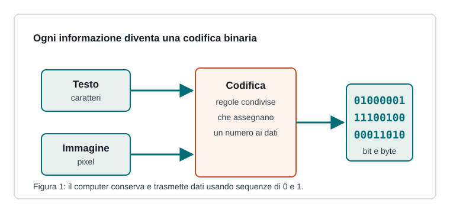

Capitoletto 1.1
Rappresentazione dell'informazione
Un elaboratore non memorizza lettere, immagini o suoni nel modo in cui li percepiamo: li rappresenta come sequenze di bit interpretate secondo regole precise.

Dati, informazioni e codici
Un dato è una rappresentazione elementare, come il numero 17, la lettera A o il colore di un pixel. Diventa informazione quando qualcuno lo interpreta in un contesto: 17 può essere un'età, una temperatura o un codice d'aula.
Il computer lavora con segnali elettrici distinguibili in due stati. Per questo usa il sistema binario: ogni posizione può valere 0 oppure 1. La parte importante non è solo la sequenza di bit, ma il codice con cui quella sequenza viene letta.
Bit, byte e multipli
Il bit è l'unità minima dell'informazione digitale. Con 1 bit si rappresentano 2 valori, con 2 bit 4 valori, con 3 bit 8 valori: in generale, con n bit si rappresentano 2n combinazioni.
| Unità | Significato | Esempio |
|---|---|---|
| bit | 0 oppure 1 | stato acceso/spento |
| byte | 8 bit | spesso un carattere o una piccola parte di dato |
| kB, MB, GB | multipli decimali | memorie di massa e traffico dati |
| KiB, MiB, GiB | multipli binari | dimensioni interne vicine alle potenze di 2 |
Basi numeriche
Il sistema decimale usa dieci cifre e potenze di 10; il sistema binario usa due cifre e potenze di 2. In informatica si incontra spesso anche l'esadecimale, che usa 16 simboli e compatta quattro bit in una sola cifra.
Il binario 1011 vale 1*8 + 0*4 + 1*2 + 1*1 = 11 in decimale. Lo stesso valore in esadecimale si scrive B.
Testo, immagini e segnali
Per i testi si usano tabelle di codifica, come ASCII e Unicode. Unicode permette di rappresentare alfabeti diversi, simboli matematici e molti caratteri internazionali.
Le immagini raster sono griglie di pixel; ogni pixel è descritto da valori numerici, ad esempio componenti rosso, verde e blu. Audio e video derivano invece dalla digitalizzazione di segnali variabili nel tempo, tramite campionamento e quantizzazione.
Compressione e formati
Un formato stabilisce come organizzare i dati e quali metadati servono per interpretarli. La compressione può essere lossless, se ricostruisce esattamente il dato originale, oppure lossy, se elimina dettagli poco rilevanti per ridurre molto la dimensione.
| Tipo | Formato | Caratteristica |
|---|---|---|
| Testo | TXT, HTML, JSON | leggibili o strutturati |
| Immagine | PNG, JPEG | PNG senza perdita, JPEG con perdita controllata |
| Audio | WAV, MP3 | WAV non compresso, MP3 compresso |
Ripasso
Perché una sequenza di bit da sola non basta?
Perché la stessa sequenza può avere significati diversi: numero, carattere, colore, istruzione o parte di un file. Serve conoscere il codice usato.
Quanti valori rappresentano 8 bit?
28, quindi 256 combinazioni diverse.